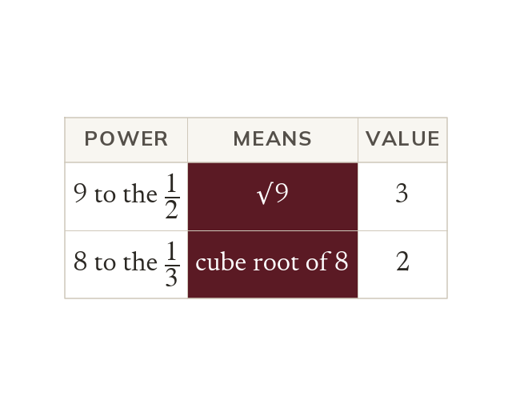
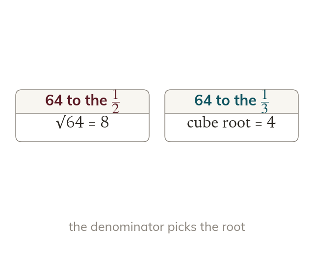
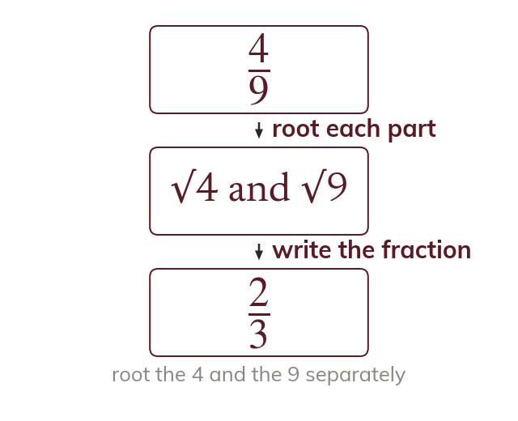
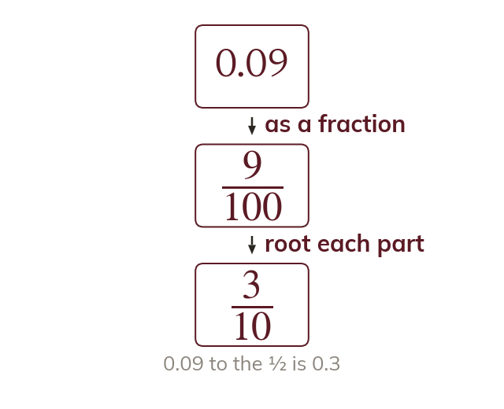

A half power undoes squaring
Squaring 9⁽¹²⁾ gives 9 by the power law. So 9⁽¹²⁾ is the square root of 9, which is 3.
By the power law, (9⁽¹²⁾)² = 9¹ = 9. So 9⁽¹²⁾ is the number whose square is 9, which is the square root, 3.
If 2 cubed is 8, what power of 8 gives back 2? The index laws answer that question, and the answer turns every root into a power.
Work down the page at your own pace. Write every answer in your book first, then click to check it.
Read each card, then follow the worked examples one step at a time.

Squaring 9⁽¹²⁾ gives 9 by the power law. So 9⁽¹²⁾ is the square root of 9, which is 3.

In a power of 1n, the n says which root to take. So 64⁽¹³⁾ is the cube root of 64, not its square root.
Pick an answer. If it's wrong, the feedback tells you which mistake it was.
Read each card, then follow the worked examples one step at a time.

The root of a fraction is the root of each part. So (49)⁽¹/²⁾ is 23.

A decimal is easier to root as a fraction. So 0.09⁽¹²⁾ is (9100)⁽¹/²⁾, which is 310.
Pick an answer. If it's wrong, the feedback tells you which mistake it was.
Finished? Next lesson: 10H.5.4 General Fractional Indices.
Log in, then search for a code to practise that skill.
Videos, worksheets and more on each part of this lesson.